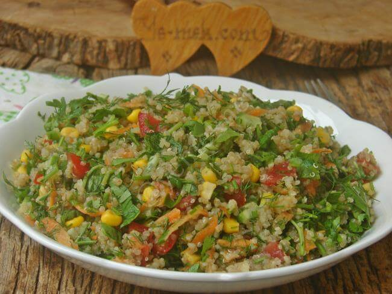

Yemek Tariflerine Hoş Geldiniz
Kinoa Salatası
Malzemeler
- 1 su bardağı kinoa
- 2 su bardağı su
- 1 adet salatalık (küçük doğranmış)
- 1 adet kırmızı kapya biber (doğranmış)
- 8-10 adet cherry domates (ikiye bölünmüş)
- Yarım demet maydanoz (ince kıyılmış)
- Yarım demet taze nane (ince kıyılmış)
- Yarım demet dereotu (isteğe bağlı)
- 2-3 dal taze soğan
- Yarım limon suyu
- 3 yemek kaşığı zeytinyağı
- Tuz
- Karabiber
Yapılışı
- Kinoayı bir süzgece alıp bol suyla iyice yıkayın (acı tadını almak için bu önemli).
- Tencereye alın, 2 su bardağı su ekleyin ve kaynamaya bırakın. Kaynayınca altını kısın, suyunu çekene kadar (10-15 dk) pişirin. Ardından soğumaya bırakın.
- Büyük bir kaba doğranmış salatalık, biber, domates, yeşillikler ve soğuyan kinoayı alın.
- Ayrı bir kapta limon suyu, zeytinyağı, tuz ve karabiberi karıştırın.
- Sosu salatanın üzerine döküp güzelce harmanlayın.
💡 İsteğe göre içine haşlanmış mısır, avokado, nar taneleri veya beyaz peynir de ekleyebilirsin.
💡 İster ana öğün yerine, ister et/tavuk yemeklerinin yanında sağlıklı bir salata olarak servis edebilirsin.